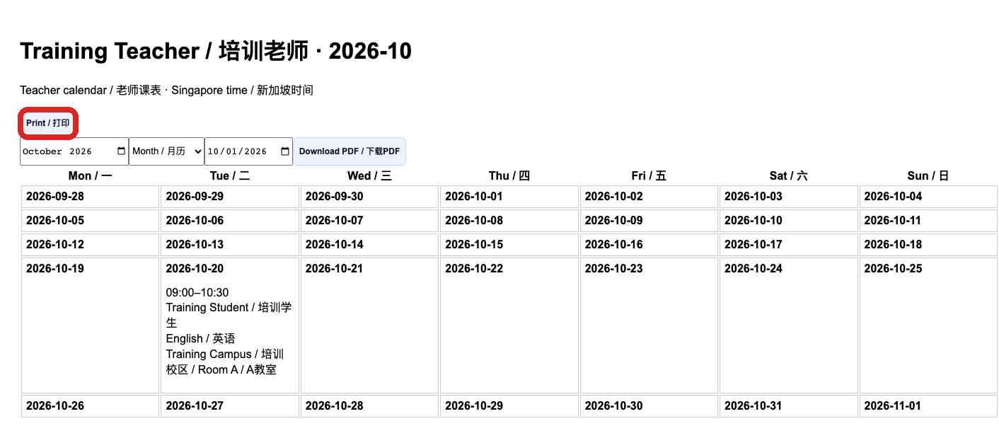

Download and print the teacher calendar
老师及获授权管理者 / Teachers and authorised managers
使用方法 / How to use按编号逐步操作，红框标出本步操作位置；页面或权限不一致时停止并联系主管。
Follow each numbered step. Red boxes identify the relevant control. If the page or access differs, stop and contact your manager.
老师从本人工作台点击 Download / print my calendar。管理者从对应老师月历进入打印或导出入口。先核对老师姓名及月份。
A teacher selects Download / print my calendar in their own workspace. An authorised manager opens the selected teacher’s calendar. Check the teacher and month.
按需要选择 Month 月历或 Week 周清单；选择周清单时填写周起始日期。时间以新加坡时间为准。
Choose Month or Week. For a weekly list, enter the week start date. Times are shown in Singapore time.

点击 Download PDF 下载，或进入 Print version 后点击 Print。打印前检查预览；月历可选择横向及合适的页面比例。
Select Download PDF, or open Print version and select Print. Check the preview; landscape orientation may help for a month calendar.
检查本人、日期、教室、课程和是否包含所需可用时间。老师只能导出获授权的课表；缺少入口时请主管核对账号权限。
Check the teacher, dates, rooms, lessons and whether availability is included where needed. If the entry is missing, ask a manager to check your account access.